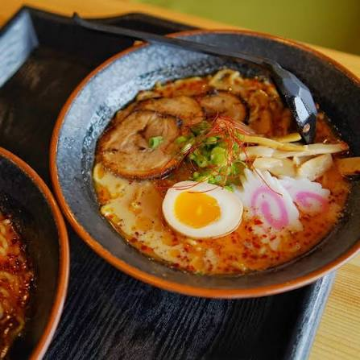

Spicy Tonkotsu ramen is a Japanese noodle soup that features a rich and creamy pork bone broth, combined with spicy seasonings and toppings. This dish is known for its bold flavors and satisfying texture, making it a favorite among ramen enthusiasts.